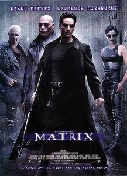
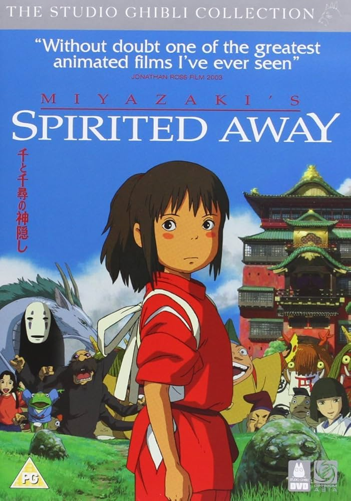
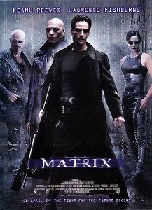
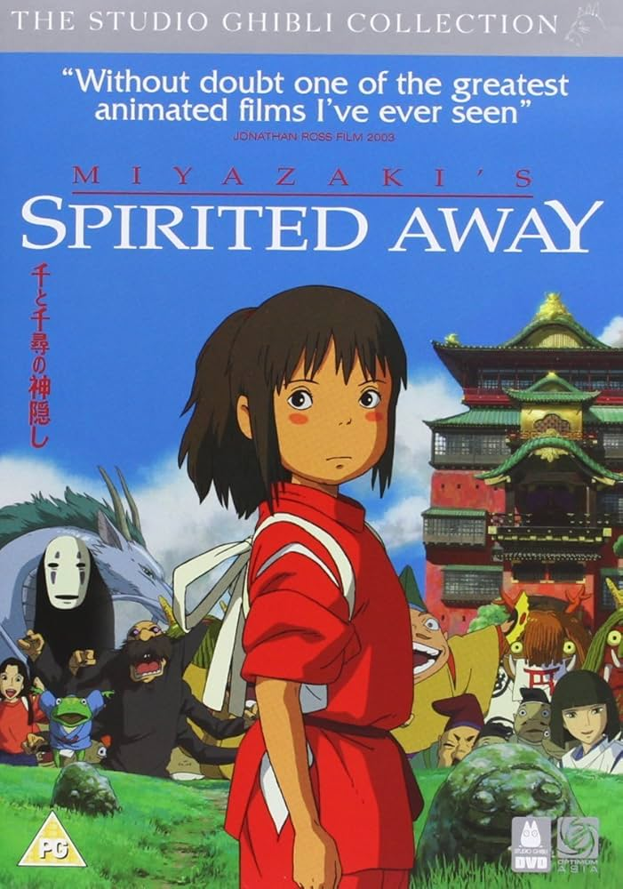
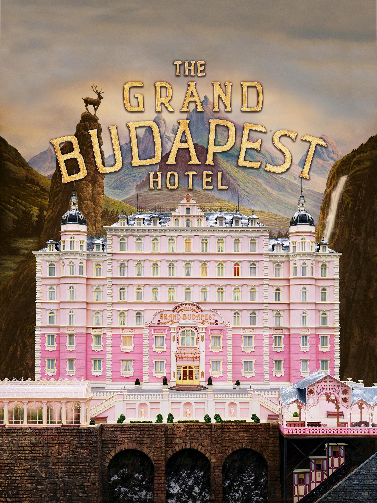
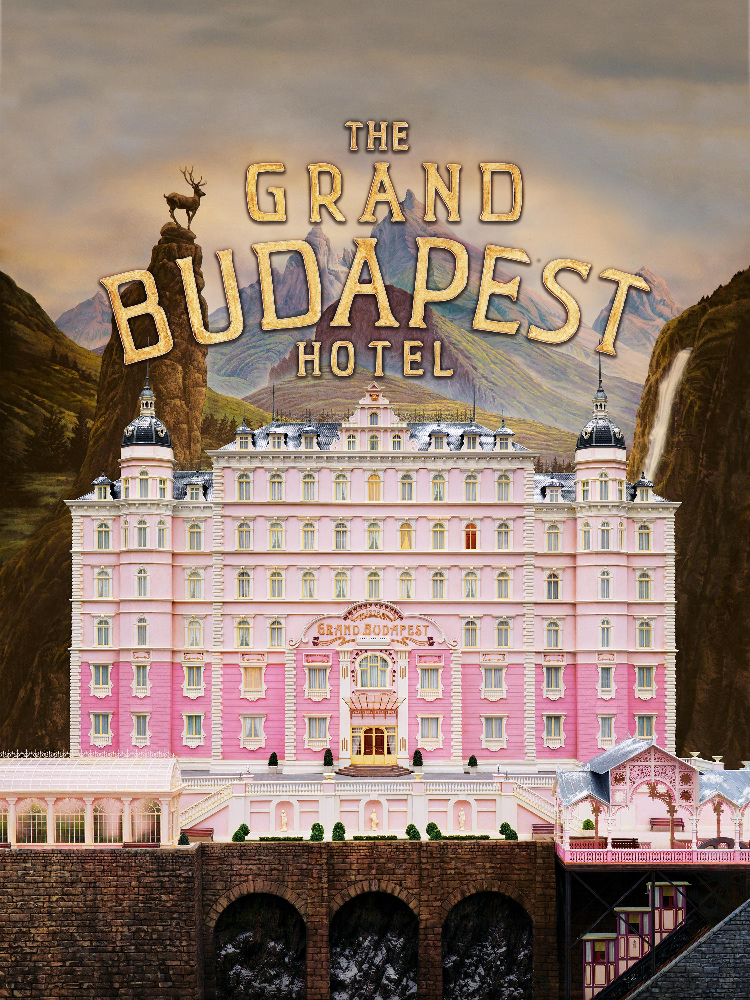

 

Género: Ciencia ficción, thriller. Elenco: Protagonizada por Leonardo DiCaprio, Joseph Gordon-Levitt, Ellen Page, Tom Hardy, Ken Watanabe, Marion Cotillard. Director: Christopher Nolan.
SINOPSIS: Dom Cobb es un “extractor” que roba secretos del subconsciente durante el sueño. Le ofrecen una última misión: en vez de robar una idea, implantar una. Si lo consigue, será liberado de su pasado.
Dirección: Lana y Lilly Wachowski. Reparto estelar: Keanu Reeves, Laurence Fishburne, Carrie-Anne Moss, Hugo Weaving, Joe Pantoliano.
SINOPSIS: Thomas Anderson, un programador de día y hacker de noche, descubre que el mundo que conoce es una simulación creada por máquinas. Se une a una rebelión para liberar a la humanidad.
Género: Animación, fantasía. Director: Hayao Miyazaki. Personajes principales: Chihiro Ogino, Haku, Yubaba.
SINOPSIS: Chihiro es una niña de 10 años que, al trasladarse con sus padres, entra en un mundo mágico gobernado por espíritus. Tras un accidente, sus padres se transforman en cerdos y ella debe trabajar en un balneario para encontrar la forma de librarlos.
Dirección: Bong Joon-ho. Reparto: Song Kang-ho, Lee Sun-kyun, Cho Yeo-jeong, Choi Woo-shik, Park So-dam.
SINOPSIS: La familia Kim vive en un sótano y apenas llega a fin de mes. Cuando el hijo consigue trabajar como tutor de la hija de una familia rica, infiltrarse se convierte en una misión para sobrevivir… pero el plan tiene consecuencias imprevisibles.
Dirección: Wes Anderson. Reparto: Ralph Fiennes, Tony Revolori, Saoirse Ronan, F. Murray Abraham.
SINOPSIS: En la ficticia República de Zubrowka entre guerras, Gustave H., conserje de lujo, y Zero Moustafa, su joven protegido, viven aventuras tras el robo de una pintura renacentista y la lucha por una gran herencia familiar.